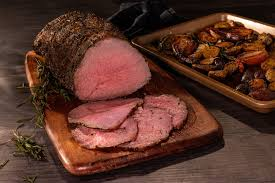

HOME
Roast Beef

Description
Roast beef doesn't refer to just one cut of beef — eye of round, bottom round roast,
top round roast, top sirloin roast, and bone-in rib roast are all commonly used cuts.
Affordable eye of round roast is the best pick for this recipe — its rich flavors
develop beautifully during slow cooking.
Ingredients
- 3 pounds beef eye of round roast, at room temperature
- ½ teaspoon kosher salt, or more to taste
- ½ teaspoon garlic powder, or more to taste
- ¼ teaspoon freshly ground black pepper, or more to taste
Directions
- Gather all ingredients. Preheat oven to 375 degrees F (190 degrees C)
- Make sure roast is at room temperature.
Tie roast at 3-inch intervals with cotton twine;
this helps it from drying out and allows it to cook more evenly.
Place roast on a rack in a baking pan.
- Mix together salt, garlic powder, and pepper in a small bowl.
Rub seasoning mixture into the meat.
- Place in the preheated oven and roast for 60 minutes, or 20 minutes per pound
if your roast is larger or smaller.
An instant-read thermometer inserted into the center
should read 120 to 125 degrees F (49 to 52 degrees C)
- Remove from the oven and transfer to a cutting board.
Cover loosely with foil, and let rest so juices can redistribute,
15 to 20 minutes
- Slice and serve